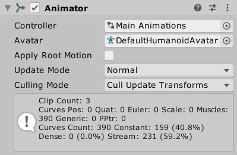
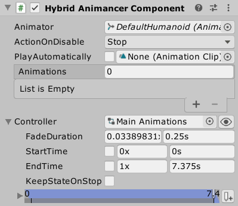
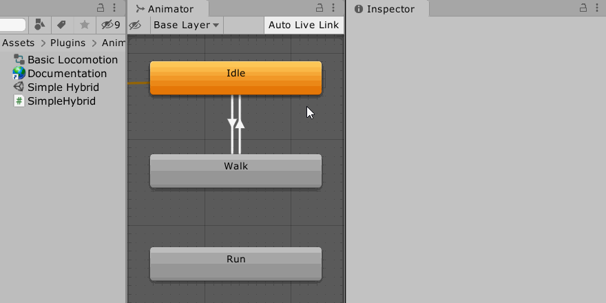

This is a Pro-Only Feature: you can try it out in the Unity Editor with Animancer Lite, but it will not be available in runtime builds unless you purchase Animancer Pro.
Animancer doesn't require the use of Animator Controllers but gives you several options for dealing with them:
| Method | Summary | Advantages | Disadvantages |
|---|---|---|---|
| Conversion | Entirely replace the Animator Controller with Animancer features. | Easiest to use and gives the best resulting flexibility and workflow. | It can take a lot of effort to replace a complex Animator Controller with code. |
| Native | Use the Controller field on the Animator component and control it exactly as you normally would. Blending only works for Generic Rigs. |
Fully compatible with existing code that controls an Animator such as third party plugins and character controllers. |
Doesn't support Blending on Humanoid Rigs. |
| Hybrid | Use a HybridAnimancerComponent and control it using similar methods to the ones you would normally use on an Animator component. |
Supports Blending on all Rig types. | Doesn't allow you to directly control the speed of the Animator Controller. |
| States | Create a ControllerState to manage the Animator Controller like any other State in Animancer. |
Supports Blending on all Rig types and you can make as many ControllerStates as you want to mix and blend between multiple Animator Controllers. |
Doesn't allow you to directly control the speed of the Animator Controller. |
The Animator Controllers examples demonstrate how to use them.
Native
The Animator component has a Controller field in the Inspector where you would normally assign an Animator Controller asset. With Animancer, you don't need to use that field but you still can if you want to use an Animator Controller alongside Animancer.
This allows you to swap between the pre-defined animations in the Animator Controller and any separate animations you want to play with Animancer as necessary. Any type of Rig can instantly swap between an Animator Controller and Animancer with this approach, but unfortunately Blending between them is only possible for Generic Rigs, not Humanoids.
Also note that with this approach, the Animator Controller will always be running in the background, even when Animancer is fully overriding the output (which may be wasting performance).
| Task | Description |
|---|---|
| Control | You control the Animator component exactly as you normally would, which means this approach allows you to use other systems that rely on Animator Controllers alongside Animancer without needing to modify them. |
| Play Animancer | Simply Play an Animation as you normally would with Animancer to have it take over from the Animator Controller. |
| Play Controller | Call AnimancerComponent.Stop or AnimancerLayer.StartFade to allow the Animator Controller to take over again. Specifically, the total Weight of Animancer's Layers determines how much it overrides the Animator Controller so if you want it to keep playing you can set its Weight directly. |
[SerializeField] private AnimancerComponent _Animancer:
[SerializeField] private AnimationClip _SeparateAnimation:
void NativeControllerExample()
{
// Play the "Idle" state in the Animator Controller:
_Animancer.Animator.Play("Idle");
// Set the "MoveSpeed" parameter in the Animator Controller:
_Animancer.Animator.SetFloat("MoveSpeed", 0.5f);
// Play a separate animation not included in the Animator Controller:
_Animancer.Play(_SeparateAnimation);
// Stop all separate animations and return to the Animator Controller:
_Animancer.Stop();
// Fade out Animancer's Layer 0 over 0.25 seconds and return to the Animator Controller:
_Animancer.Layers[0].StartFade(0, 0.25f);
}
The Hybrid Basics example demonstrates this approach in more detail.
Hybrid
The HybridAnimancerComponent is one of Animancer's Component Types which allows you to play an Animator Controller inside Animancer. It achieves a similar result to the Native approach and allows you to Blend between the Animator Controller and Animancer on any Rig type, but requires some modification to any existing code that would control the Animator component directly.
This approach also avoids running the Animator Controller in the background.
The term "Hybrid" can be applied to any of these approaches since they involve a combination of Animancer and Animator Controllers. This particular approach simply has that name because it uses the HybridAnimancerComponent.
| Task | Description |
|---|---|
| Control | All of the Animator control methods like Play, CrossFade, GetFloat, SetFloat, etc. have equivalent methods with the same name in the HybridAnimancerComponent class so it is usually just a matter of changing the object they are being called on. |
| Play Animancer | Simply Play an Animation as you normally would with Animancer to have it take over from the Animator Controller. |
| Play Controller | Call HybridAnimancerComponent.PlayController to allow the Animator Controller to take over again. |
[SerializeField] private HybridAnimancerComponent _Animancer:
[SerializeField] private AnimationClip _SeparateAnimation:
void HybridControllerExample()
{
// Play the "Idle" state in the Animator Controller:
_Animancer.Play("Idle");
// Set the "MoveSpeed" parameter in the Animator Controller:
_Animancer.SetFloat("MoveSpeed", 0.5f);
// Play a separate animation not included in the Animator Controller:
_Animancer.Play(_SeparateAnimation);
// Return to the Animator Controller using the transition settings in the Inspector:
_Animancer.PlayController();
}
The Hybrid Mini Game example demonstrates this approach in more detail.
Unfortunately, it's not possible to directly control the speed of the Animator Controller when using a HybridAnimancerComponent.
States

ControllerStates are a type of State in Animancer which plays a whole Animator Controller where a ClipState plays a single AnimationClip. This allows you to fully control how they blend with other animations and can even be used to play multiple Animator Controllers on the same character.
| Task | Description |
|---|---|
| Control | All of the Animator control methods like Play, CrossFade, GetFloat, SetFloat, etc. have equivalent methods with the same name in the ControllerState.Playable so it is usually just a matter of changing the object they are being called on. |
| Play Animancer | Simply Play an Animation as you normally would with Animancer to have it take over from the Animator Controller. |
| Play Controller | Simply Play the ControllerState like any other state in Animancer. |
The most common way to set up a ControllerState is by using a Controller Transition to configure it in the Inspector (the HybridAnimancerComponent is actually just a NamedAnimancerComponent with a ControllerTransition field added on and various methods to directly access its Playable). They can also be Created Manually in code.
[SerializeField] private AnimancerComponent _Animancer:
[SerializeField] private ControllerTransition _Controller:
[SerializeField] private AnimationClip _SeparateAnimation:
void ControllerTransitionExample()
{
// Play the Animator Controller:
_Animancer.Play(_Controller);
// Set the "MoveSpeed" parameter in the Animator Controller:
_Controller.State.SetFloat("MoveSpeed", 0.5f);
// Play a separate animation not included in the Animator Controller:
_Animancer.Play(_SeparateAnimation);
}
If you are using a ControllerTransition you will need to access its playable via its state, i.e. transition.State.Playable.... Note that the State will only be created the first time the transition is passed into the AnimancerComponent.Play method, so it will be null if you attempt to use it before that. If the transition is being used by multiple objects, its State will be the most recently played one.
Unfortunately, it's not possible to directly control the speed of the Animator Controller when using a ControllerState.
Manual Creation
If you do not want to use a Controller Transition, you can create ControllerStates yourself using code:
- Create a
new ControllerStatewith theRuntimeAnimatorControlleryou want it to use. - Store a reference to that state in a field and/or set its Key to register it in the internal dictionary. The
RuntimeAnimatorControlleritself or itsnamewould make an acceptable key. - Play that state either by passing it into
AnimancerComponent.Playif you have a reference to it or using the key you registered it with.
[SerializeField] private AnimancerComponent _Animancer:
[SerializeField] private RuntimeAnimatorController _Controller:
[SerializeField] private AnimationClip _SeparateAnimation:
private ControllerState _ControllerState;
void ControllerStateExample()
{
// Create the ControllerState:
_ControllerState = new ControllerState(_Controller);
// Play it:
_Animancer.Play(_ControllerState);
// Fade to it over 0.25 seconds:
_Animancer.Play(_ControllerState, 0.25f);
// Set the "MoveSpeed" parameter in the Animator Controller:
_ControllerState.SetFloat("MoveSpeed", 0.5f);
// Play a separate animation not included in the Animator Controller:
_Animancer.Play(_SeparateAnimation);
}
Parameter Controller States

Animancer includes several classes which inherit from ControllerState to wrap specific parameters of the AnimatorController in C# properties:
Using them is very similar to the base class, but you also specify which parameter(s) you want to target in the constructor and can then get and set those parameters via their Parameter properties.
- This has the added benefit of verifying that the parameter actually exists on startup to make it easier to detect bugs.
- Using their Transitions gives you a helpful dropdown menu in the Inspector for selecting the parameter name(s) instead of hard-coding them as Magic Strings. The Linear Blending example demonstrates the use of a
Float1ControllerTransition. - You can easily make your own copies of the scripts containing these classes if you want to adapt them for other parameter types and purposes or you can use the Controller State Generator to create a dedicated class for a specific Animator Controller.
Controller State Generator
Weaver is another Unity Plugin developed by Kybernetik which contains a system for procedurally generating C# scripts (among many other features). It can procedurally generate a class for Animancer which inherits from ControllerState and contains properties for directly accessing the parameters of a specific Animator Controller asset.
- Download Weaver Lite or Weaver Pro.
- Select the Animator Controller asset you want to generate a class for.
- Open the context menu via the cog icon in the top right of the Inspector and execute the
Generate Controller Statefunction. - Choose where to save the generated script.

Here is the class it would generate if you used that function on the Humanoid Idle And Move Animator Controller from the Hybrid Basics example:
Note that it has both a state and a parameter called "Move" so the MoveHash can be used for both of them.
#pragma warning disable // All.
/// <summary>An <see cref="Animancer.ControllerState"/> for the 'Humanoid Idle And Move' Animator Controller.</summary>
public sealed class HumanoidIdleAndMoveState : Animancer.ControllerState
{
#region Hash Constants
/// <summary>Idle</summary>
public const int IdleHash = 2081823275;
/// <summary>Move</summary>
public const int MoveHash = 1326225478;
#endregion
#region Parameter Wrappers
/// <summary>Creates a new <see cref="HumanoidIdleAndMoveState"/>.</summary>
public HumanoidIdleAndMoveState(UnityEngine.RuntimeAnimatorController controller, bool keepStateOnStop = false)
: base(controller, keepStateOnStop)
{
#if UNITY_EDITOR
new Animancer.ControllerState.ParameterID("Move", MoveHash).ValidateHasParameter(controller, UnityEngine.AnimatorControllerParameterType.Bool);
#endif
}
/// <summary>The value of the 'Move' parameter in the Animator Controller.</summary>
public bool Move
{
get => Playable.GetBool(MoveHash);
set => Playable.SetBool(MoveHash, value);
}
/// <summary>ParameterCount</summary>
public override int ParameterCount
{
get => 1;
}
/// <summary>GetParameterHash</summary>
public override int GetParameterHash(int index)
{
switch (index)
{
case 0: return MoveHash;// Move.
default: throw new System.ArgumentOutOfRangeException(nameof(index));
}
}
#endregion
#region Transition
/// <summary>A serializable <see cref="Animancer.ITransition"/> which can create a <see cref="HumanoidIdleAndMoveState"/> when passed into <see cref="Animancer.AnimancerPlayable.Play(Animancer.ITransition)"/>.</summary>
[System.SerializableAttribute]
public new class Transition : Transition<HumanoidIdleAndMoveState>
{
/// <summary>Creates and returns a new <see cref="HumanoidIdleAndMoveState"/>.</summary>
public override HumanoidIdleAndMoveState CreateState() => State = new HumanoidIdleAndMoveState(Controller, KeepStateOnStop);
#if UNITY_EDITOR
/// <summary>[Editor-Only] Draws the Inspector GUI for a <see cref="Transition"/>.</summary>
[UnityEditor.CustomPropertyDrawer(typeof(Transition), true)]
public new class Drawer : Animancer.ControllerTransition.Drawer
{
}
#endif
}
#endregion
}
The source code of the generator script is located at Assets/Plugins/Weaver/Procedural Assets/Animations/ControllerStateGenerator.cs.
Generating Transitions
If you have an Animator Controller which you want to replace with Animancer, you can select any of its states and use the cog icon in the top right of the Inspector to execute the Generate Transition function which will create Animancer Transition Assets for each of those states:
- A regular state will create a
ClipTransition. - A Blend Tree will create an equivalent Mixer State depending on its Blend Type according to the Choosing a Mixer table.
